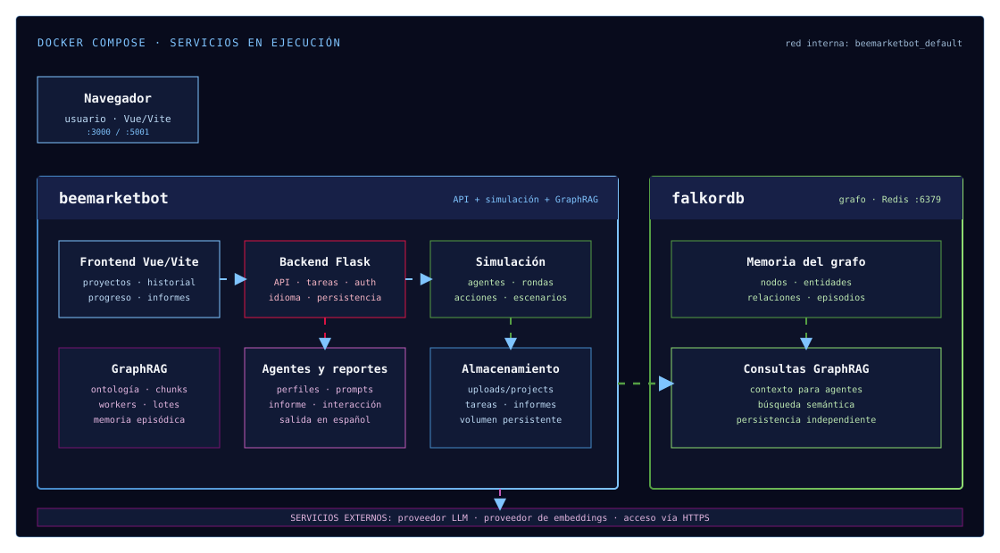

Experiencia
Portal web, selector de idioma, historial, progreso de tareas, informe y conversación con agentes.
Los puntos animados representan solicitudes y respuestas que atraviesan las etapas del sistema.

La API y el worker comparten una cola durable; GraphRAG puede recuperarse sin bloquear simulaciones ni informes.
Portal web, selector de idioma, historial, progreso de tareas, informe y conversación con agentes.
beemarketbot-api concentra Flask, autenticación, proyectos, simulaciones, informes y seguimiento de tareas.
beemarketbot-graphrag-worker consume trabajos durables, procesa fragmentos y actualiza la memoria episódica.
Perfiles de agentes, actividad en plataformas, rondas, escenarios y acciones observables.
FalkorDB conserva el grafo; uploads guarda proyectos, tareas, informes y la cola GraphRAG recuperable.
Los proveedores LLM y de embeddings se configuran desde la interfaz y el worker aplica esa configuración compartida.
| Componente | Responsabilidad | Estado esperado |
|---|---|---|
| Frontend Vue/Vite | Entrada, configuración y visualización del flujo. | Interactivo |
beemarketbot-api | API, autenticación, simulaciones, informes y lectura contextual. | Independiente del worker |
beemarketbot-graphrag-worker | Construcción del grafo e ingesta episódica mediante LLM y embeddings. | Asíncrono y recuperable |
| Cola durable | Comunica API y worker mediante tareas y estados persistidos en uploads/graphrag_queue. | Conservada tras reinicios |
| FalkorDB | Almacena nodos, relaciones y memoria del mundo. | Persistente |
| Proveedor LLM | Genera ontología, perfiles, acciones y análisis. | Configurable |
| Proveedor de embeddings | Convierte texto y consultas en vectores semánticos. | Configurable |